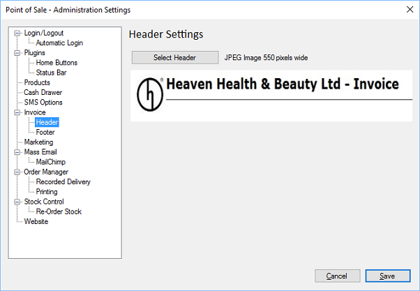

Header
Previous
Top
Next
You can change the image that is displayed on the top of invoices.

Click select header to choose a new header image, the image must be 550 pixels wide and will be displayed on the top of all invoices and orders.